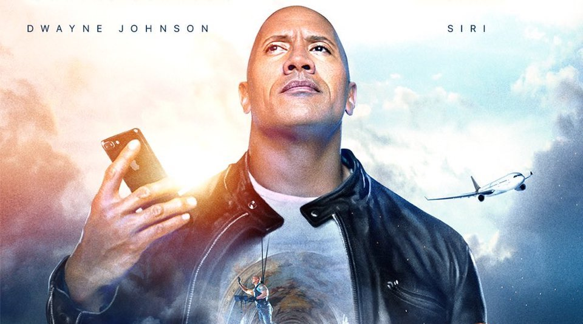

搭档Siri,苹果和巨石强森合拍了一部微电影
2017-07-24 10:10


7月24日消息,巨石强森昨天在个人Twitter上宣布,将与苹果AI个人助理Siri共同拍摄一部电影。这部电影被称为《The ROCK x SIRI Dominate the Day》（巨石和 Siri 主宰那一天）。
根据强森发出的电影海报，这部电影将以苹果语音助手 Siri 为题材，电影内将会有星际旅行、外星人战争、音乐会及汽车追逐等场景，而目前还尚未知道电影片长和剧情，巨石强森表示这将会是一部历史上最酷、最疯狂、最壮观、最有趣的电影。
目前电影的内容并未对外透露，强森仅仅是在 Twitter 上公布了宣传海报。苹果的这部新电影似乎是在为今年将推出的基于 Siri 的智能音箱 HomePod 预热。
这部影片将于北京时间本周二在苹果官方 YouTube 频道上线。